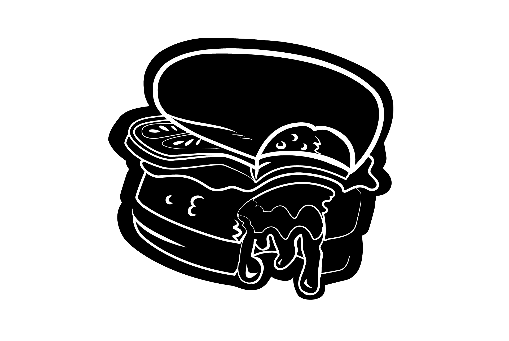

¿Quienes Somos?
Codo Beer and Burguers nace en Buenos Aires, Argentina con la premisa de ofrecer
hamburguesas y cervezas de calidad premium, con locales de ambiente moderno, distendido
y agradable, diseñados en detalle. Contamos con nuestra propia planta de producción,
donde fabricamos hamburguesas de 100% carne premium de novillo, medallones de pollo y
veggie, entre otros. Utilizamos los mejores insumos del mercado, exclusivos y
customizados. Nuestros proveedores son grandes socios estratégicos y comparten nuestros
valores. Hoy en dia contamos con 2 locales ubicados en Capital Federal.
Nuestro compromiso con la calidad se refleja en cada plato que servimos, así que no
dudes en consultarnos si tienes alguna pregunta sobre nuestros ingredientes o si
necesitas alguna recomendación para elegir el plato perfecto. Gracias por visitar
nuestra web, esperamos verte pronto en nuestro local para que puedas disfrutar de
nuestras deliciosas hamburguesas y cervezas artesanales en persona. ¡Buen provecho!
